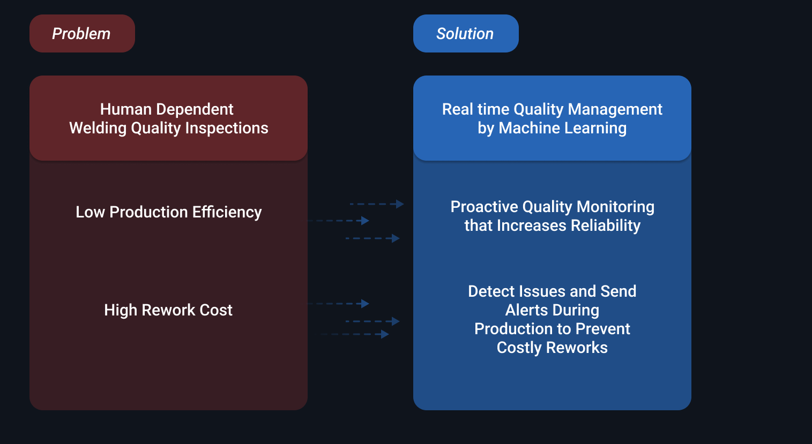
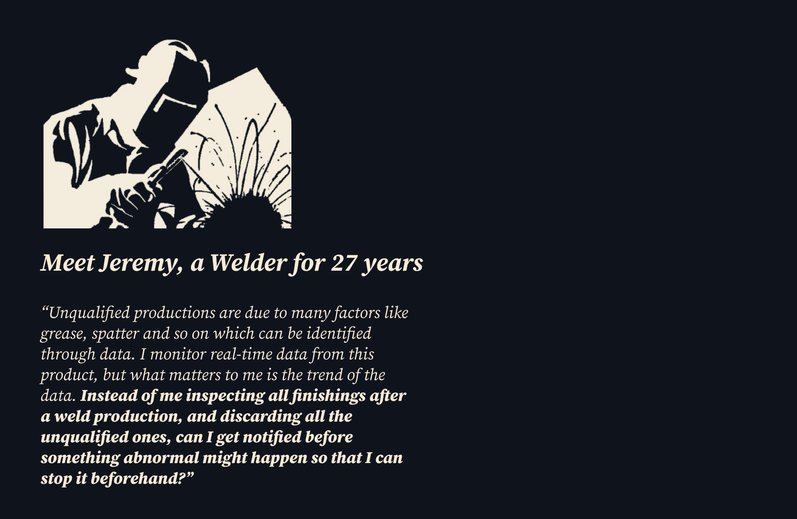
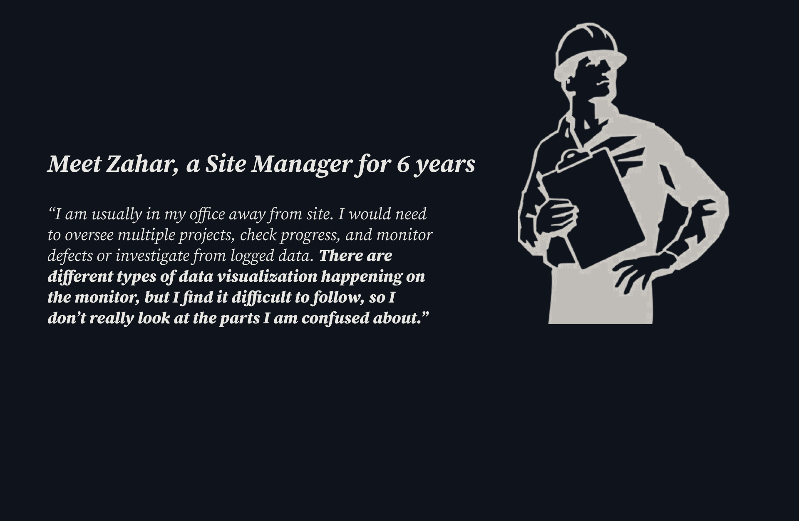
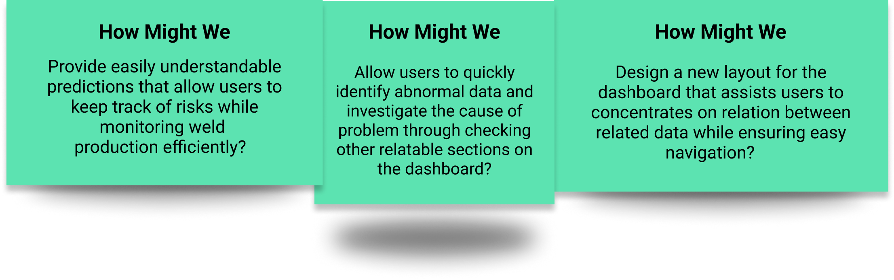
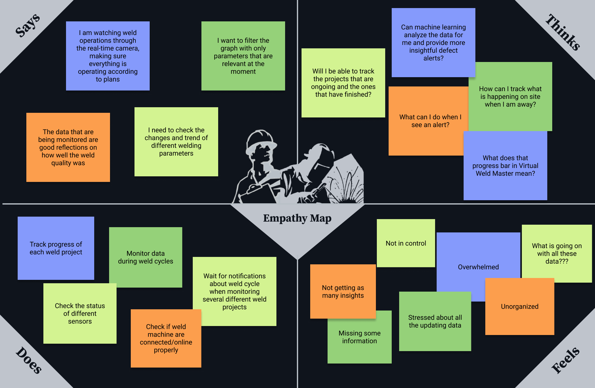
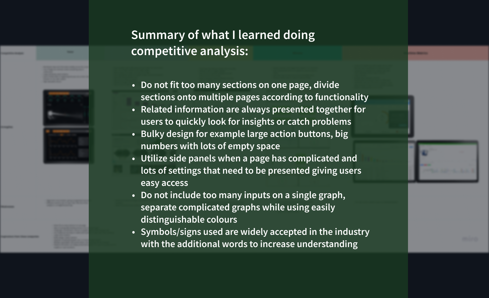
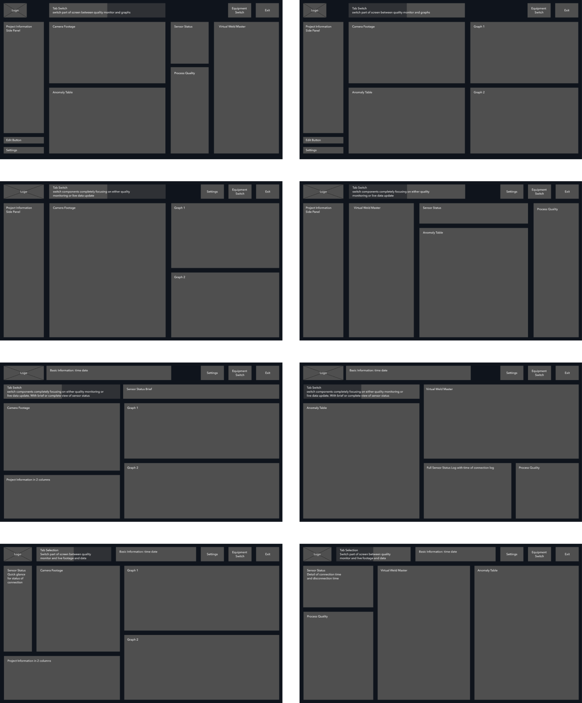
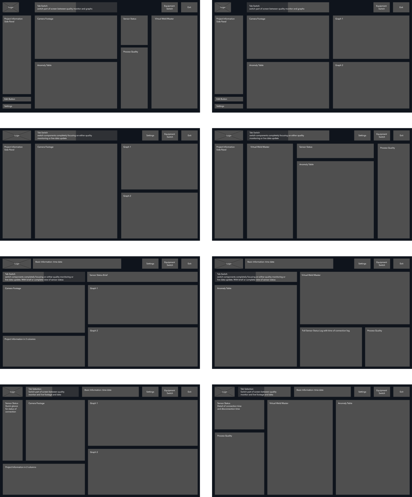

Problem Overview
The welding industry is facing low production efficiency, and high rework cost due to the fact that 90% of current inspections are highly human dependent, and defects are only noticed at the end of weld cycles.
AutoMetrics is a startup that aims to help the industry increase production efficiency and reduce rework cost by leveraging machine learning in manufacturing operations.
My role in solving the problem
I was the sole user experience and interface designer that reimagined how real time quality management(Inspection 4.0) could be utilized to help users monitor welding process effitiently and alert users before the end of weld cycles to prevent high rework costs.
Other tasks including brochure design and marketing video were also fun and rewarding to work on.
I focused on two key use cases - proactive monitoring and defect alerts during production.
Starting with understanding the problem
To understand how the monitoring experience can be improved, I asked some users who have tried the product about their experience.
I organized the feedbacks into 4 sections:
Based on users' feedbacks, I created personas that represented two types of target users and their major pain points. Personas also served as an empathetic way to help me present real world user needs to my manager and the engineering team.
 Users’ feedbacks uncovered crucial problems:
- The main features did not resonate with users as we had anticipated, users were using the software at its minimal
Users were not relying on machine learning features such as proactive monitoring and early defect notification, users were only using basic features like tracking project status and monitoring standard weld data.
- The Proactive Monitoring System was frequently misunderstood
The original progress bars that monitored each parameter failed to effectively convey the predictions, causing users to unexpectedly encounter ambiguous errors in real-time rather than proactively receiving notifications about potential issues in advance.
- Overwhelming Interface
The interface layout caused distraction, important data such as new defect alerts became less prominent.
- Defects were too vague giving users hard time to investigate
Defects that manifest on the Anomaly table are too vague, making it challenging for users to effectively investigate potential issues.
Summarizing the Biggest Problem
Users are not relying on machine learning predictions, and the users need predictive defect notifications to help early prevention.
AutoMetrics is committed to delivering users with dependable proactive monitoring and defect alerts that were previously unattainable. In response to user feedback on the previous version,we had to reimagine how predictions and defect notifications are provided to ensure users having a sense of control and reliability, as if welders were virtually observing the live welding process on-site, right from their screens.
Another challenge was to re-organize all sections according to their purpose and interrelationships enabling users to conveniently examine associated sections side by side for effective troubleshooting when a defect happens.
I identified “How Might We” (HMW) opportunities by reframing user feedback, enabling me to establish attainable goals and ensure sustained motivation
I used the Empathy Map to understand users behaviours while using the product, and helped me make decisions on what goals to achieve on the new version of the monitor.
Based on user attitudes and behaviours from my Empathy Map, I focused on 3 High-Level Goals:
Goal 1
Let users know that the Proactive Monitoring System is real-time monitoring all parameters and offers predictions that allow users to address errors ahead of time.
Goal 2
Design a new layout that strategically groups related sections together, offering users a more convenient and streamlined approach to track and monitor issues.
Goal 3
Ensuring that deviations or defects consistently stand out and are prominently noticeable within the interface.
Step by step to the solution...
Being unfamiliar with the weld industry, I took the initiative to learn from other companies that had developed similar products through Competiive Analysis. I engaged in discussions with my manager and developers who had a deeper understanding of the technical aspects and welding industry trends. The meetings and research methods inspired me determine some suitable direction to explore with.
I paid attention to 4 most relevant things during competitive analysis:
- What layout or structure are others using?
- How to arrange information/data in different ways?
- How to use colour on complicated graphs?
- What are some patterns or common strengths?
Conducting a Competitive Analysis assisted me in comprehending industry trends, identifying elements to incorporate into my design, and recognizing aspects to avoid.

My project manager and I always focused on the main goal of the company, which is to offer users a product that enhances weld quality by providing proactive monitoring and real-time defect detection. Every component and feature on the product was built to align with this goal.
After a thorough reevaluation of all components, we decided to remove two redundant components, this design decision was made because the data in the redundant components were combianed into other components. Meaning that they didn't need to be featured on the product seperatly on their own.
Evaluation Matrix led me to take on the challenging yet exciting task of designing a brand-new layout that optimizes the user experience.
2 things that I focused on while drafting out new layouts:
- Prioritizing on proactive monitoring
- The relationship between adjacent components, and how they help users investigate problems faster.
Through conducting a competitive analysis, I was inspired by the effectiveness of separating content into multiple pages with tabs as a means to help users easily focus on important information.
Establishing a well-thought-out layout was crucial to ensure the cohesive grouping of relevant components based on their function. This approach aimed to enable users to effortlessly access adjacent components when defects occur, facilitating efficient troubleshooting.
Incorporating 'How Might We' prompts throughout the design process proved to be really helpful, as they served as constant guideposts, keeping me focused on the project's core objectives and essential goals.
 

Following user testing and several rounds of iteration, we ultimately decided to split the tab into two sections. This design allows users to seamlessly switch between reviewing live footage and accessing proactive monitoring status along with data records.
One of the major challenges was to design components that effectively communicate the outcomes derived from complex machine learning processes.
Due to limitations in backend data visualization and performance speed, I found it valuable to bring sketches to discussions. This approach helped me gain a clearer understanding of layouts to avoid and narrow down potential possibilities for the design.
Rapid design sessions enabled me to generate numerous quick ideas that I could share with developers for further discussion.
Adapting to the welding industry...
Competitive analysis inspired me to try combining coloured icons and text to catch users eyes when crucial defects happen.
Safety signs are widely distributed throughout welding sites and welders are familiar with them, I recognized an opportunity to incorporate signs as visual signals within the interface. This approach would facilitate users in recognizing the various sections and parameters being monitored.
Due to the fact that this software is still being built and tested, the final design cannot be shared here at the moment. But thank you for reading through my journey.

My reflection...
Through this project, I learned how important it is to alwaysfirst understand why we need a particular product and how its features contribute to its usefulness for users.I was tasked with working on an existing product, and I learned a lot when I stepped back and gathered pain points from customers, it was the feedback that helped me understand more about the problem and set goals on how to improve the product. If I were to move forward with this product, I am eager to receive feedback from both previous users of the product and first-time users, as their perspectives and interactions with the new interface will greatly inform further improvements. Diversified feedback is always what makes a product evolve and empowers designers to be more confident on how to revise the product, ultimately benefiting a wider range of users over time.